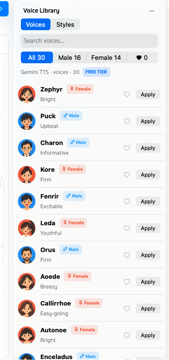

Voice-overs that keep changingเสียงพากย์ที่แก้ได้เรื่อยๆ
Gemini TTS sounds great, but a playground forgets: close the tab and the script, the voices and the takes are gone. AI Voice Manager keeps all three, as a project on your Mac.Gemini TTS เสียงดีมาก แต่ playground ไม่จำอะไรเลย ปิดแท็บเมื่อไหร่ บท เสียง และ take ก็หายหมด AI Voice Manager เก็บทั้งสามอย่างไว้เป็นโปรเจกต์ในเครื่องของคุณ
Why it existsทำไมถึงสร้างแอปนี้
It started with short videos: app promos and TikTok clips, mostly in Thai, rewritten line by line until they fit. Every rewrite meant pasting the script again, picking the voices again and losing the take before.เริ่มจากการทำคลิปสั้น ทั้งคลิปโปรโมทแอปและ TikTok ส่วนใหญ่เป็นภาษาไทย แก้บททีละบรรทัดจนกว่าจะลงตัว ทุกครั้งที่แก้ต้องวางบทใหม่ เลือกเสียงใหม่ และ take ก่อนหน้าก็หายไป
AI Voice Manager turns the script into scenes you can move, mute and preview one at a time, and keeps every take next to the timeline that made it.AI Voice Manager เปลี่ยนบทให้เป็นฉากที่ย้าย ปิดเสียง และลองฟังทีละฉากได้ และเก็บทุก take ไว้คู่กับไทม์ไลน์ที่สร้างมันขึ้นมา
How it worksทำงานอย่างไร
One app, no helper, no server of ours. A project is a folder in Application Support: project.json, and a Takes folder with each take's WAV and the timeline it came from. Finder can read all of it, and a deleted project goes to the Trash.เป็นแอปเดียว ไม่มี helper ไม่มีเซิร์ฟเวอร์ของเรา หนึ่งโปรเจกต์คือหนึ่งโฟลเดอร์ใน Application Support มี project.json และโฟลเดอร์ Takes ที่เก็บ WAV ของแต่ละ take พร้อมไทม์ไลน์ที่ใช้สร้าง เปิดดูใน Finder ได้ทั้งหมด และโปรเจกต์ที่ลบจะไปอยู่ในถังขยะ
Takes are made by Google's Gemini TTS, called straight from your Mac with your own API key from the Keychain. Quick preview uses the Mac's own voices, and the AI Agent talks to Ollama on your Mac.take สร้างโดย Gemini TTS ของ Google เรียกตรงจากเครื่องคุณด้วย API key ของคุณเองที่เก็บใน Keychain ส่วน Quick preview ใช้เสียงของ Mac และ AI Agent คุยกับ Ollama ในเครื่องของคุณ
Open sourceโอเพนซอร์ส
AI Voice Manager is written in Swift and SwiftUI with no third-party packages, covered by more than 75 tests and released under the MIT License. Bug reports, ideas and pull requests are welcome onAI Voice Manager เขียนด้วย Swift และ SwiftUI ไม่ใช้ package ภายนอก มีเทสต์มากกว่า 75 รายการ เผยแพร่ภายใต้สัญญาอนุญาต MIT แจ้งบั๊ก เสนอไอเดีย หรือส่ง pull request ได้ที่ GitHub.


Gomin AppsGomin Apps
AI Voice Manager is the third app in the family, after Hosts Manager and Git Exclude Manager. Same window, same side panels, same History and AI Agent: if you use one, you already know the others.AI Voice Manager เป็นแอปตัวที่สามในครอบครัว ต่อจาก Hosts Manager และ Git Exclude Manager หน้าต่างเดียวกัน แผงด้านข้างเหมือนกัน History และ AI Agent เหมือนกัน ใช้เป็นตัวหนึ่งก็ใช้ตัวอื่นได้ทันที


Made by Watthajak Jinasamพัฒนาโดย Watthajak Jinasam
Built so a good take never gets lost again. The little glass robot has a waveform on its visor and a microphone for an antenna: it says what you write.สร้างขึ้นเพื่อไม่ให้ take ดีๆ หายไปอีก หุ่นยนต์แก้วตัวเล็กมีคลื่นเสียงบนหน้าจอและมีไมโครโฟนเป็นเสาอากาศ พูดตามที่คุณเขียน